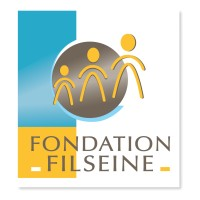

Assistante de Soins en Gérontologie
Résidence des Sapins - Fondation Filseine (Rouen)
2013-2021
- Préservation de l'autonomie de personnes âgées souffrant de troubles cognitifs et comportementaux.
- Élaboration et animation d'activités et de soins adaptés.
- Travail en équipe pluridisciplinaire
Aide-soignante
Accompagnement de personnes souffrant de troubles cognitifs dans la réalisation des activités de la vie quotidienne notamment les soins d’hygiène et de confort
Formation
- Bachelor en Community Management à la Normandie Web School (2021-2023)
- Attestation d'assistante de soins en gérontologie obtenu en 2013
- Équivalence du diplôme d'État d'aide-soignante obtenue en 2011
- Bac scientifique spécialité S.V.T. obtenu en 2008
Compétences
- Photoshop
- Illustrator
- InDesign
- Premiere Pro
- HTML 5
- CSS3
- Rédaction / orthographe
- Réseaux sociaux
Centres d'intérêts
- Co-créatrice et membre du pôle Communication de Just Have Fun, association étudiante ayant pour but de rassembler les passionés de jeux en tous genres, tout en promouvant la culture du jeu dans la pratique d'activités ludiques diverses.
- Création de contenu pour ma page Instagram
- Montage de vidéos pour ma chaîne Youtube
- Rédaction d’avis et de critiques d’oeuvres culturelles sur divers supports
- Intérêt pour la culture populaire japonaise : mangas, animes, jeux vidéo en VOSTFR
- Appétence pour la cuisine, avec la création de menus hebdomadaires et la réalisation de recettes « healthy »
{kind=link}